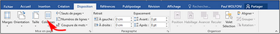
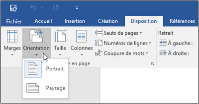
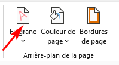
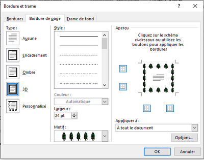
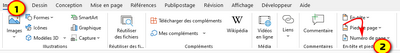
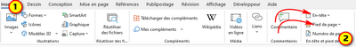

VI) Mise en page, Arrière-plan de la page, Entête et pied de page
1. La Mise en page
a. Présenter du texte en colonnes
✔ Sélectionnez le texte à mettre en colonnes.
✔ Dans le groupe «mise en page» de l’onglet «Disposition» cliquez sur:«Colonne »
✔ Choisissez l'option de votre choix ou sélectionnez «Autres colonnes» pour définir votre propre format de colonnes.

b. Modifier l’orientation des pages
✔ Dans le groupe «mise en page» de l’onglet «Disposition» cliquez sur:«Orientation»
✔ Cliquez sur l’orientation attendue : «Portrait» ou «Paysage»

2. Arrière-plan de la page
a. Insérer un filigrane
Un filigrane est une marque (texte ou image) qui apparaît en arrière-plan sur chacune des pages d'un document Word.
Pour insérer un filigrane personnalisé:
✔ Dans le groupe «Arrière-plan de la page» de l’onglet «Création», cliquez sur le bouton «Filigrane»
✔ cliquez sur l’option «Filigrane personnalisé» puis modifiez les options souhaitées.
✔ Cliquez sur le bouton «OK»

b. Couleur de page
✔ Dans le groupe «Arrière-plan de la page» de l’onglet «Création», cliquez sur le bouton «Couleur de page»
✔ Cliquez sur la couleur de votre choix.
c. Bordures de page
✔ Dans le groupe «Arrière-plan de la page» de l’onglet «Création», cliquez sur le bouton «Bordures de page»
✔ Choisissez le type de bordure «Encadrement» , «Ombre», «3D» ou «Personnalisé»
✔ Choisissez «le Style» ou «le Motif» dans les listes correspondantes.

3. Entête et pied de page
a. Numéros de page
✔ Dans le groupe «En-tête et pied de page» de l’onglet «Insertion», cliquez sur «Numéro de Page»
✔ choisissez l’emplacement et le style souhaités

b. Entête et pied de page
✔ Dans le groupe «En-tête et pied de page» de l’onglet «Insertion» accédez à:
- La liste des options «En-tête » puis sélectionnez l'en-tête souhaité.
- La liste des options «Pied de page » puis sélectionnez le Pied de page souhaité.

Remarque
Certaines conceptions de pied de page incluent des numéros de page.